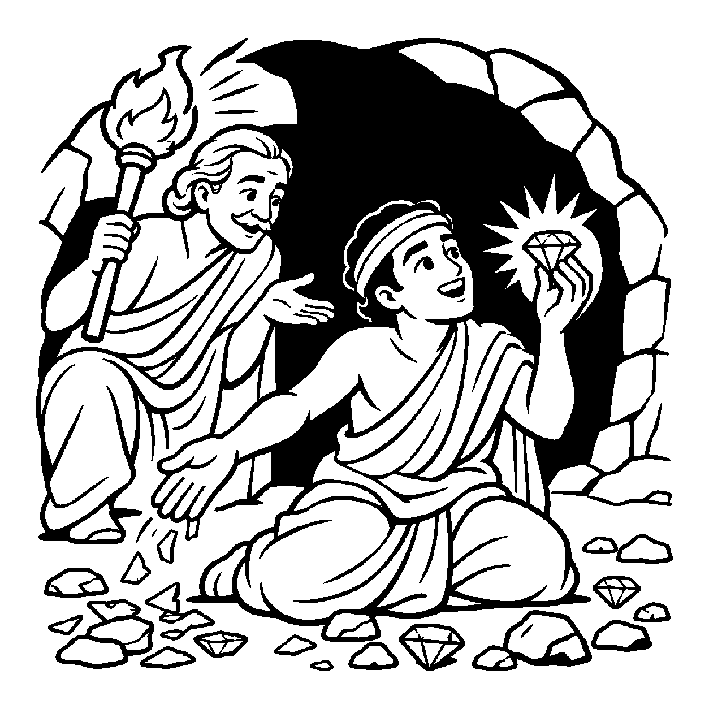

ઘોર અંધારી, અમાસની રાત્રિએ એક ગાઢ જંગલમાંથી પસાર થતા બે મુસાફરો તરફ જુઓ: એક મુસાફર પાસે ખૂબ બળ છે, તે ઝડપથી દોડી શકે છે પણ તેની આંખો નથી; બીજો મુસાફર ભલે સામાન્ય ગતિથી ચાલે છે પણ તેના હાથમાં એક તેજસ્વી દીપક છે અને તેની પાસે સ્વચ્છ દ્રષ્ટિ છે. અંધ મુસાફર ગમે તેટલી ઝડપે દોડશે તો પણ તે કાંટામાં ફસાશે અથવા ઊંડી ખીણમાં પડીને પ્રાણ ગુમાવશે! પરંતુ જેની પાસે દીવો અને આંખો છે, તે માર્ગના ખાડા, પથ્થરો અને સર્પોને બચાવીને સાચી દિશામાં ડગલાં માંડી પોતાના મુકામે હેમખેમ પહોંચી જશે! તેવી જ રીતે મોક્ષમાર્ગમાં ક્રિયા ભલે ગમે તેટલી ઉગ્ર હોય, પરંતુ જ્યાં સુધી અંદર સમ્યગ્ વિવેકબુદ્ધિ અને આત્મજ્ઞાનનો પ્રકાશ ન હોય ત્યાં સુધી તે કેવળ અંધ દોડધામ બની રહે છે. જ્ઞાનની મુખ્યતાથી સાધ્યની સિદ્ધિ દર્શાવતો દ્રષ્ટિકોણ એટલે 'જ્ઞાનનય'.
જ્ઞાનનય ધર્મસાધનાનો પ્રાણ છે. જ્ઞાન વિના કરેલી તપશ્ચર્યા કે ક્રિયાકાંડ કેવળ શરીરનું શોષણ બની રહે છે. જ્યારે આત્મામાં 'હું કોણ છું? આ શરીર શું છે? રાગ શું છે?' એવો ભેદવિજ્ઞાનરૂપી વિવેક જાગે છે, ત્યારે જ સાધકની પ્રત્યેક પ્રવૃત્તિ મોક્ષનું કારણ બને છે. જ્ઞાન એ દીવા જેવું છે જે સમગ્ર ભવસાગરના ભયમાંથી તારે છે.
આ નય સાધકને અજ્ઞાન અને અંધશ્રદ્ધામાંથી મુક્ત કરી સમ્યગ્ વિવેકના પરમ પ્રકાશમાં લીન કરે છે.
હાથ વિષે દીપક ગ્રહી, પંથ લહે જે જન;
જ્ઞાનનયથી ઓળખે, આતમ શુદ્ધ રતન.
વિવેક વિના ક્રિયા વૃથા, અંધ તણી જેમ દોટ;
જ્ઞાન નેત્ર જો ઊઘડે, ટળે ભવોભવ ખોટ.
સાધકને અજ્ઞાન અને અંધશ્રદ્ધામાંથી મુક્ત કરી સમ્યગ્ વિવેકના પરમ પ્રકાશમાં લીન કરે છે.

ધર્મક્ષેત્રના એક નગરમાં રત્નપાલ નામનો એક સાધક વર્ષોથી એક અંધારા ભોંયરામાં બેસીને કઠોર ઉપવાસ અને જપ કરતો હતો. તે શરીરને ખૂબ કષ્ટ આપતો હતો. તે ભોંયરામાં પથ્થરો, કાચના ટુકડા અને કિંમતી હીરાઓ એકસાથે જમીન પર વેરાયેલા પડ્યા હતા. રત્નપાલ અંધારામાં આખો દિવસ હાથ ફેરવતો અને કાચના ટુકડાઓને રત્ન સમજીને છાતીએ ચાંપતો હતો! કાચની ધાર તેના હાથમાં ખૂંપતી અને લોહી નીકળતું, છતાં તે વિચારતો: "હું આટલું તપ કરું છું છતાં મને સાચું રત્ન કેમ મળતું નથી? મારો હાથ કેમ લોહીલુહાણ થાય છે?" રત્નપાલના અંતરમાં સાચા રત્નની પરખ અને શાંતિ પામવાની તીવ્ર પિપાસા હતી.
એક દિવસ તે ભોંયરામાં એક પ્રબુદ્ધ આત્મજ્ઞાની સંત પ્રવેશી ગયા. તેમના હાથમાં એક તેજસ્વી મશાલ હતી. મશાલનો પ્રકાશ થતાં જ આખું ભોંયરૂં ઝગમગી ઊઠ્યું! સંતે રત્નપાલને કહ્યું: "રત્નપાલ! જ્ઞાનનયની મશાલ પ્રગટાવ! તું અંધારામાં બેસીને કાચના ટુકડા ભેગા કરતો હતો, તેથી તારા હાથ વીંધાયા! જો, સામે પેલો સાચો હીરો પડ્યો છે!" રત્નપાલે પ્રકાશમાં જોયું તો કાચ અને હીરા વચ્ચેનો ભેદ એક જ ક્ષણમાં સ્પષ્ટ થઈ ગયો! તેણે કાચ ફેંકી દીધો અને એક જ પળમાં સાચો હીરો ઉપાડી લીધો! સંતે કહ્યું: "અંધારામાં કરેલી મહેનત કેવળ પીડા આપે છે, પણ જ્ઞાનના પ્રકાશમાં એક જ ક્ષણમાં સાધ્ય સિદ્ધ થાય છે!" રત્નપાલને આત્મજ્ઞાનનું મહત્ત્વ સમજાઈ ગયું. તેણે મિથ્યા હઠાગ્રહ છોડી દીધો અને વિવેકના દિવ્ય ઉજાસમાં તેનું ચિત્ત પરમ વિશ્રામમાં સમાઈ ગયું.
જો જીવ કેવળ જ્ઞાનની વાતો કરીને બેસી રહે અને ચારિત્ર કે સદાચારરૂપી પગલાં ન ભરે, તો તે પંગુ બનીને માર્ગમાં જ અટકી જાય છે. એક જ પાસાને પકડી રાખવાથી વસ્તુની સમગ્ર અનેકાંતમય સત્તા વિખંડિત થાય છે અને સાધક પોતાના જ એકાંગી આગ્રહના બંધનમાં ફસાઈને સાચી શાંતિ ગુમાવી બેસે છે.
આ નય સમ્યગ્ વિવેકબુદ્ધિને ધર્મનો પાયો બતાવી સાધકને સાચી દિશા આપે છે, જેથી સાધક મહામૌનમાં અંતર્લીન થઈ જાય છે.